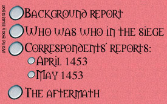

|
On May 29, 1453, Muhammad II, sultan of the Ottoman Empire, completed his conquest of the East Roman Empire, known to some as the Byzantine Empire, by capturing Constantinople, its capital. Ottoman flags now fly where the imperial eagle, symbol of the Roman Empire, and the lion of Saint Mark, emblem of Venice, once waved proudly in the breeze. The Ottomans' victory over the East Roman Empire came 1,000 years after the Germanic king Odoacer forced the last emperor of the West Roman Empire from the throne. Here, we present a chronicle of the siege and fall of Constantinople, including information on the major participants, a background report on the siege, excerpts from reports filed by our correspondents in the two camps during the siege, and a special analysis of the Ottomans' victory.
 |